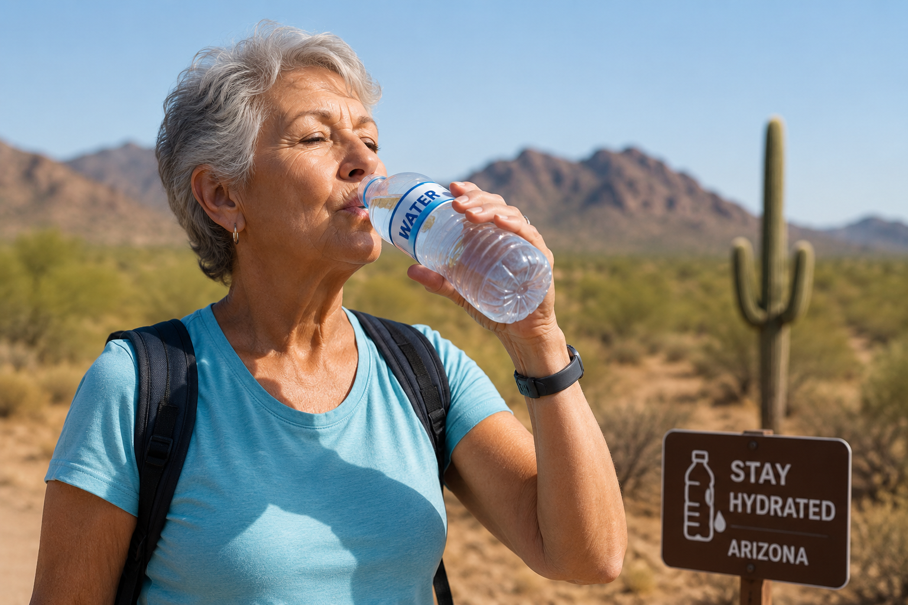
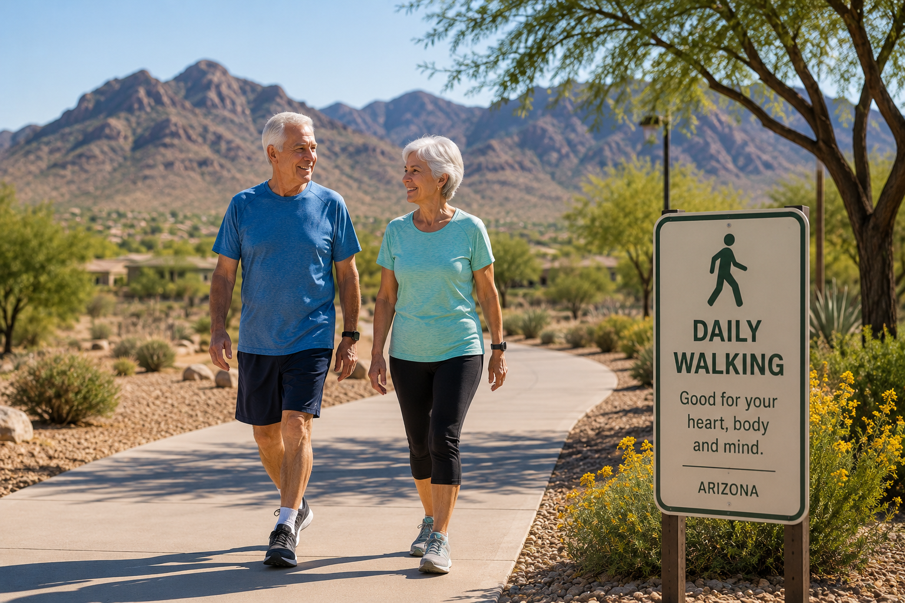

Stay Hydrated
Arizona's hot climate can increase the risk of dehydration. Drink water regularly and talk with your healthcare provider if you have heart or kidney conditions.
Educational wellness tips for older adults living in Arizona. Learn practical habits that may help support a healthier lifestyle.
Explore Tips
Arizona's hot climate can increase the risk of dehydration. Drink water regularly and talk with your healthcare provider if you have heart or kidney conditions.

Walking for 20 to 30 minutes, if appropriate for your health, may help support heart health, mobility and overall wellness. Choose cooler morning or evening hours.

Fill your plate with fruits, vegetables, whole grains, beans and healthy protein sources according to your dietary needs.
Routine health visits can help monitor blood pressure, vision, hearing and other important aspects of healthy aging.
Carry a water bottle and drink fluids throughout the day.
Choose colorful fruits and vegetables whenever possible.
Light daily movement may help maintain strength and balance.
Aim for consistent sleep habits and discuss ongoing sleep concerns with a healthcare professional.
Follow your healthcare provider's advice regarding blood pressure and cholesterol management.
Keep recommended screenings and vaccinations up to date based on professional medical guidance.